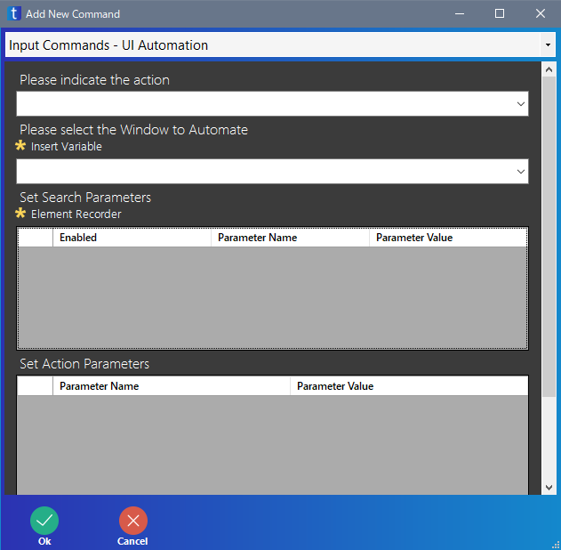
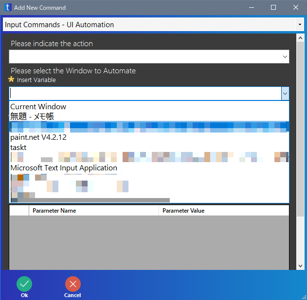
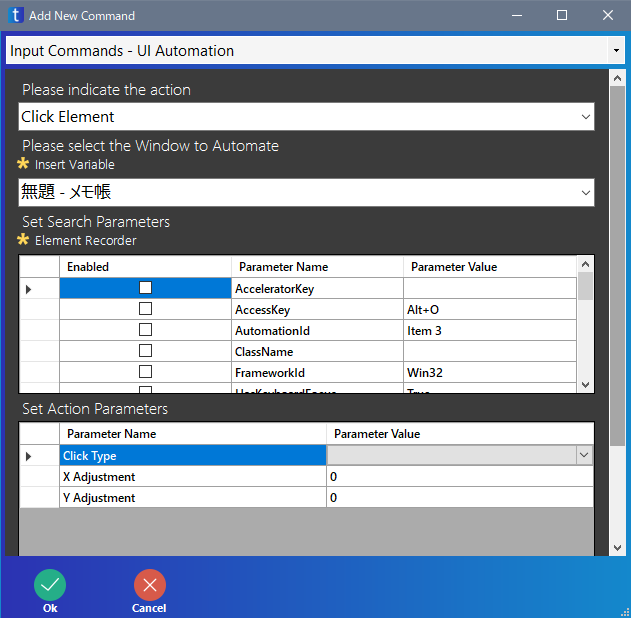
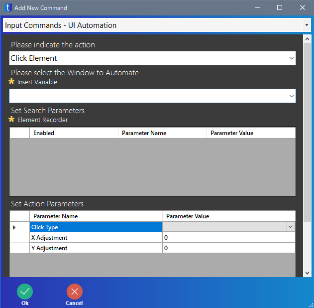
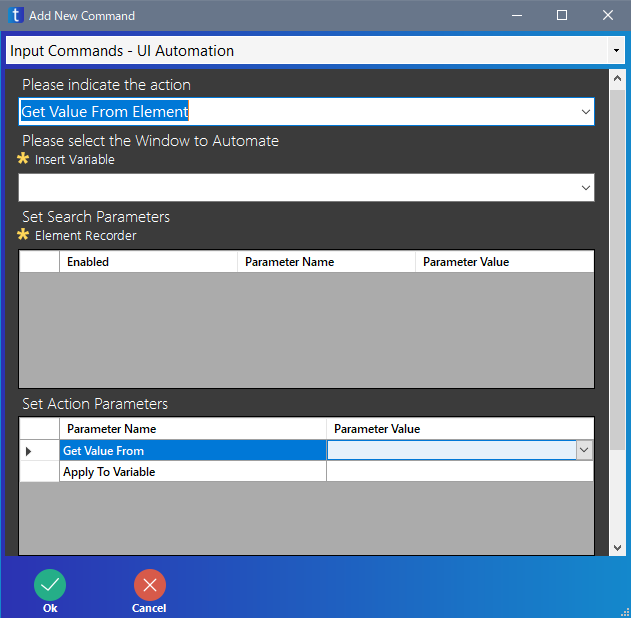
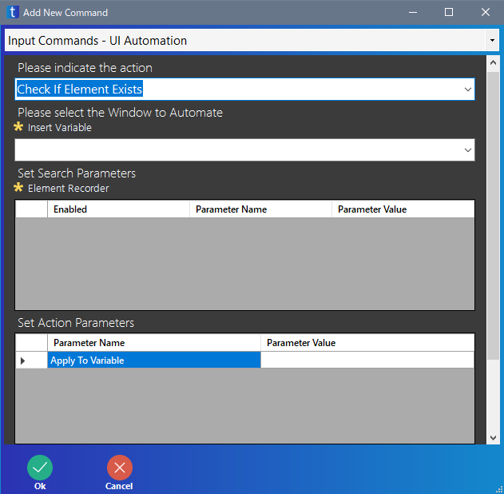

無料で使える RPA の taskt の使い方を紹介しています
UI Automation はソフト・画面の要素を認識して、クリックなどを行います。
条件さえ整えば、画像認識やパソコンの画面の座標を使ったクリックよりも、正確にクリックなどの操作が行えます。

| 項目 | 意味 |
|---|---|
| Please indicate the action | 要素に対して何を行うかを指定します |
| Please select the Window to Automate | 要素を認識するソフト・画面名を指定します バージョン 3.5.0.0 時点では「Current Window」は正常に動作しません |
| Set Search Parameters | 要素を検索する条件を指定します |
| Set Action Parameters | 検索した要素に対して行う動作を指定します Please indicate the action の設定により、選べる項目は異なります |
| Comment Field (Optional) | コメントを入力します 入力しなくても良いです |
要素に対して何を行うかを指定します。
ここの設定に応じて、Set Action Parameters の項目が変化します。
| 項目 | 意味 |
|---|---|
| Click Element | 検索した要素をクリックします |
| Get Value From Element | 検索した要素の情報を取得します |
| Check If Element Exists | 検索した要素が存在するかどうかを調べます |
要素を認識するソフト・画面を指定します。
右端の ▼ をクリックすると、現在実行中のソフト・画面の一覧が表示されます。
モーダルフォームに対する操作でも、モーダルフォームの名前ではなく、もとのソフト・画面名を指定する必要があります。
ソフト・画面名は大文字・小文字、スペースの有無なども含め正確に入力してください
存在しないソフト・画面を指定するとエラーになります。
バージョン 3.5.0.0 時点では「Current Window」を指定しても、現在のソフト・画面という指定にはなりません。

検索する方法を指定します。
ここの指定は、Element Recorder をクリックし、taskt が認識したものしか利用できません。
Parameter Name が検索条件で、Parameter Value が検索値です。
検索したい条件の Enabled のところにチェックを入れます。複数の条件にチェックを入れることも可能です。
Parameter Value は変更できるので、ほかの UI Automation 命令をコピペして、Parameter Value だけを書き換える、という使い方も可能です。

検索した要素に対して行う操作です。
ここの項目は、Please indicate the action の設定により異なります。
Click Element では、検索した要素をクリックします。

| 項目 | 意味 |
|---|---|
| Click Type | クリックの種類を選びます 通常は「Left Click」で良いと思います 空欄のままでもエラーにはなりませんが、結果的に動作しなくなります |
| X Adjustment | 要素の位置から右方向に何ピクセルずらすした位置をクリックするかの指定です |
| Y Adjustment | 要素の位置から下方向に何ピクセルずらすした位置をクリックするかの指定です |
Click Type の種類は下のようなものがあります。
| 項目 | 意味 |
|---|---|
| Left Click | マウスの左クリック (押して離す) をします |
| Middle Click | マウスの中クリック (押して離す) をします |
| Right Click | マウスの右クリック (押して離す) をします |
| Left Down | マウスの左ボタンを押す (離さない) をします |
| Middle Down | マウスの中ボタンを押す (離さない) をします |
| Right Down | マウスの右ボタンを押す (離さない) をします |
| Left Up | マウスの左ボタンを離す操作をします (押す操作はしません) |
| Middle Up | マウスの中ボタンを離す操作ををします (押す操作はしません) |
| Right Up | マウスの右ボタンを離す操作ををします (押す操作はしません) |
Get Value From Element では検索した要素の情報を取得します。
取得できる情報は、Set Search Parameters にある情報のみです。
バージョン 3.5.0.0 時点では、チェックボックスのチェックの有無や、入力エリアの入力内容の取得などはできません。

| 項目 | 意味 |
|---|---|
| Get Value From | 取得する情報の種類を指定します |
| Apply To Variable | 取得した情報を入れる変数を指定します |
Check If Element Exists では、指定した要素が存在するかどうか調べ、その結果を取得します。

| 項目 | 意味 |
|---|---|
| Apply To Variable | 結果を代入する変数を指定します |
要素の有無によって処理を分けるならば Begin If 命令、要素が存在する間処理を繰り返すなら Begin Loop 命令を使った方が良いでしょう。